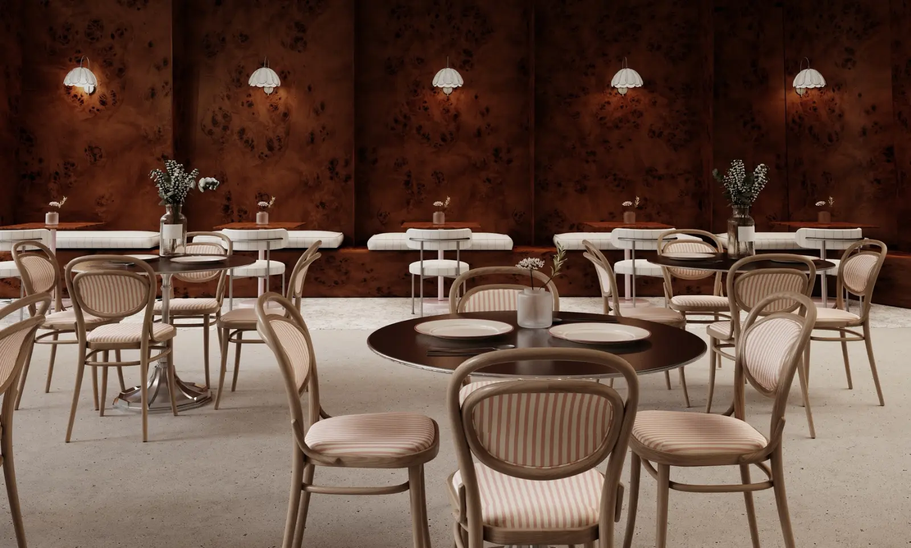
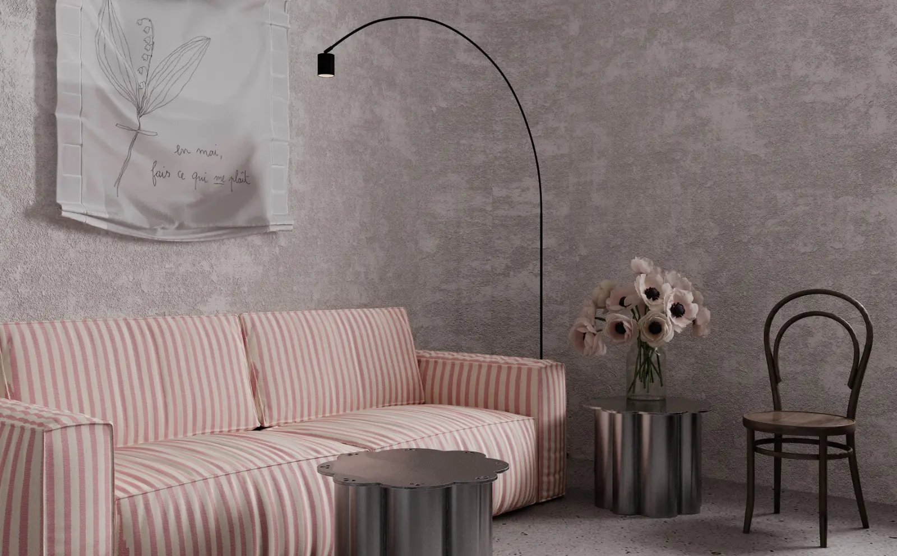
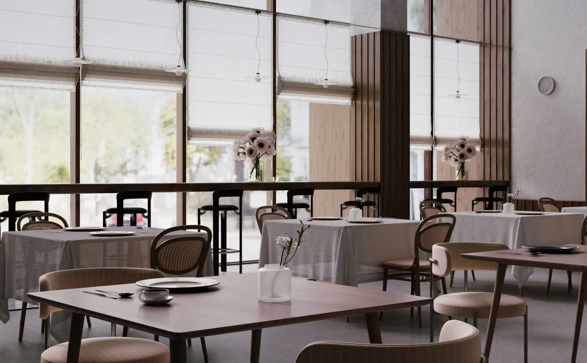

НИКОЛАЕВСКАЯ · КОНЦЕПЦИЯ ИНТЕРЬЕРА
Виртуальная экскурсия
на доработке
Предыдущая условная 3D-сцена снята с публикации: её детализация не отражала визуальную концепцию проекта. Для полноценной VR-версии требуется геометрия помещения, точная расстановка и 3D-моделирование мебели и отделки.
Ниже — визуальные ориентиры действующего концепт-сайта. Это статические изображения проекта, а не 3D-экскурсия.




Концептуальные изображения: проект POETICA, Адриана Варелджян, HSE Design. Их адаптация к реальному помещению и права на коммерческое использование требуют отдельной проверки.